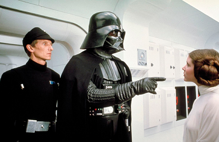
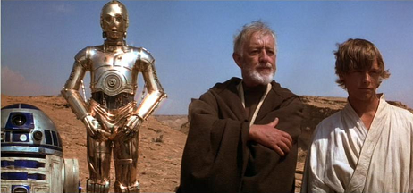
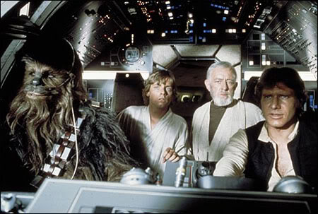
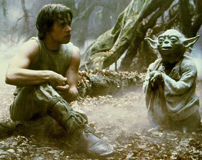
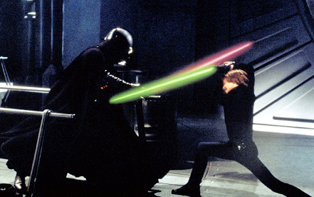
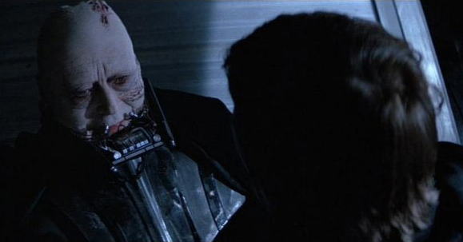

The story begins with Darth Vader nearing completion of the Death Star, which will allow the Empire to defeat the Rebel Alliance. Vader boards another ship in space that he suspects to be a rebel ship, demanding where the plans for the Death Star are. He captures Princess Leia, who had stolen the plans, and hidden them inside R2D2. R2D2 and another droid, C3PO, escape to Tatooine.

On Tatooine, the two droids are purhcased by Luke Skywalker and his aunt and uncle. While cleaning R2D2 up, Luke accidentally triggers a message from Leia, asking for help from Obi-Wan. Luke doesn't know of an Obi-Wan Kenobi, but knows of a Ben Kenobi. He helps the droids find Obi-Wan, and learns that he is a Jedi Knight living under the alias of Ben Kenobi. Luke also asks Obi-Wan about his father, and Obi-Wan tells him that Anakin was a great Jedi who was betrayed and murdered by Vader.

Obi-Wan and Luke hire the smugglers Han Solo and Chewbacca to take them to Alderaan. When they get there, or where it should be, they realize that the planet has been destroyed by the Death Star. On board the Death Star, Obi-Wan faces Vader one-on-one in a lightsaber match, but Obi-Wan allows himself to be killed, becoming one with the Force and allowing Luke and the others to escape with the plans for the Death Star. Luke and the Rebels set out to destroy it, and Luke himself fires the shot that finishes it.

Three years later, Luke travels to find Yoda, who is living in exile on the swampy planet of Dagobah. Luke tries to find Yoda in order to start his Jedi training, but is interrupted when Vader lures him into a trap, capturing Han and the others in the process. Luke and Vader duel with lightsabers, and during the fierce battle, Vader reveals to Luke that he is his father, and tries to turn Luke to the dark side.
Luke escapes, and manages to rescure Han from Jabba the Hutt, who Han owed a debt to. Luke finally returns to Yoda to complete his training, but Yoda in his old age, is on his deathbed. Before he dies, Yoda tells Luke that Vader is indeed his father, and Obi-Wan's spirit tells Luke that he must face his father in order to become a Jedi. He also tells Luke that Leia is his sister.

The Rebels attack the second Death Star, and Luke confronts Vader as the evil Emperor Palpatine watches. Both Vader and Palpatine wish to turn Luke to the dark side and take him as their apprentice. During the lightsaber duel, Luke becomes enraged, and brutally overpowers Vader. At the last minute, he stops, realizing that he is about to suffer his father's fate. He spares Vader's life, and declares his allegiant to the Jedi. Palpatine becomes enraged by this, and tries to kill Luke with Force lightning. Seeing Palpatine go after his son, Vader intervenes, and turns on his master and kill him.

Vader suffered mortal wounds in the process, and the now redeemed Vader, or Anakin Skywalker, dies in Luke's arms. Luke becomes a full-fledged Jedi, and the Rebels successfully destroy the second Death Star.